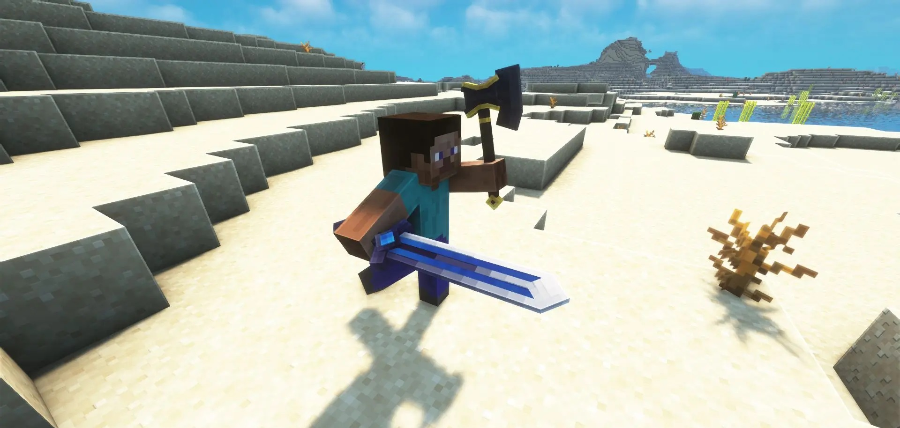
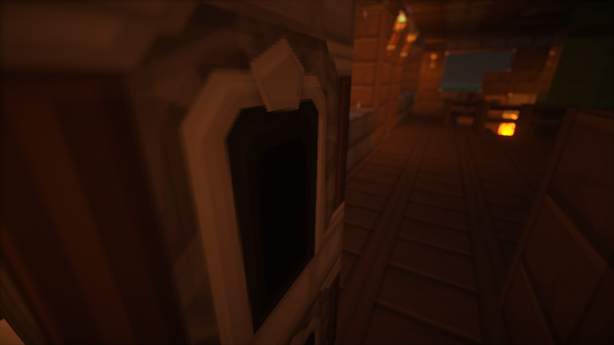

Developer Letter 1 (22/12/2023)
En cette journée exaltante, nous vous invitons à plonger dans l'univers extraordinaire
qui a pris vie au cours des derniers mois avec le futur serveur Minecraft nommé
'FightsCraft Of Legends.' Au cœur de cette aventure se trouve une passion dévorante
pour l'innovation et une détermination inébranlable à créer une expérience de jeu sans précédent.
Nous vous les présentons dés maintenant.
—————
VISUEL
Dans les recoins enchanteurs de "FightsCraft of Legends", chaque modification
visuelle a été méticuleusement choisie pour évoquer des émotions et des atmosphères uniques.
La qualité visuelle apporte des nuances subtiles aux paysages, révélant des jeux de lumière
qui dansent à travers les frondaisons des arbres et se reflètent sur les rivières sinueuses.
Ces nuances varient du réalisme saisissant de la qualité visuelle graphisme Ultra aux
ambiances plus éthérées des versions Low et Medium, permettant aux joueurs de personnaliser
leur expérience en fonction de leurs préférences visuelles

Les nuances vibrantes du graphisme Extreme embrassent le monde d'une lumière intensément
immersive,tandis que la version High maintient un subtil équilibre entre le réalisme et
l'esthétique du jeu.Les versions de graphisme Low et Medium offrent une esthétique épurée,
idéale pour ceux qui préfèrent une immersion tout en conservant des performances optimales.
Ces choix visuels se combinent pour créer un tableau en constante évolution, réagissant aux
cycles jour-nuit et aux conditions météorologiques, garantissant une expérience visuelle
dynamique et captivante à chaque coin du monde de "FightsCraft of Legends".
GAMEPLAY
Plongez dans une aventure captivante où chaque mouvement compte. Sur
"FightsCraft of Legends", l'expérience de gameplay est définie par des fonctionnalités
uniques, dont la possibilité d'attaquer avec les deux mains. Cette liberté tactique permet
aux joueurs de personnaliser leur style de combat que ce soit pour manier une épée et un
bouclier en tandem ou pour adopter une approche plus agressive
avec une arme dans chaque main.

Le système de combat est conçu pour être non seulement stratégique mais aussi fluide,
offrant des combos fluides qui récompensent la maîtrise des mouvements. Les joueurs
peuvent découvrir des enchaînements spéciaux, débloquer des compétences uniques et
perfectionner leur technique au fur et à mesure de leur progression. Chaque choix a un impact
à chaque mouvement peut être le début d'un combo épique, ajoutant une dimension
dynamique et exaltante à chaque affrontement.
"FightsCraft of Legends" met l'accent sur la liberté de choix dans le combat, encourageant
les joueurs à expérimenter et à développer leur propre style, créant ainsi une expérience de
jeu personnalisée et inoubliable.
MAP
La carte du serveur "FightsCraft of Legends" est une véritable œuvre d'art en constante évolution,
déployant son charme au-delà des horizons visibles. Les grandes villes médiévales, joyaux de la
civilisation, ne sont pas simplement des décorations statiques, mais plutôt des centres bouillonnants
d'activités dynamiques. Chacune de ces cités abrite une économie simulée où les joueurs peuvent
commercer,s'engager dans des quêtes locales et interagir avec des PNJ pleins de personnalité.
Les vastes étendues qui s'étendent entre ces bastions urbains sont un tableau varié de la nature,
offrant des aventures aussi riches que diversifiées. Des montagnes majestueuses au sommet enneigé
aux forêts mystiques regorgeant de créatures étranges, chaque coin de la carte révèle des paysages
uniques et des mystères à explorer. Ces vastes étendues ne sont pas simplement des terrains de
passage, des territoires à part entière, invitant les joueurs à découvrir des secrets cachés,
des donjons perdus

Naviguer dans cet univers expansif nécessitera des compétences de survie aiguisées, car les paysages
peuvent être aussi dangereux que magnifiques. Les joueurs devront s'aventurer hors des sentiers battus
pour découvrir des lieux secrets, mettant à l'épreuve leur capacité à surmonter les défis de la nature
tout en explorant les mystères dissimulés dans les recoins de chaque région.
ACCESSIBILITÉ
Engagé à offrir une expérience inclusive, le serveur "FightsCraft of Legends" vise à rendre son monde
accessible à tous les aventuriers. Le développement en cours d'un lanceur dédié vise à simplifier le
processus de connexion, en fournissant une interface conviviale qui facilite l'entrée dans l'univers.
du serveur
Que vous utilisiez une version premium ou crackée de Minecraft, tous les joueurs sont
"les bienvenus pour rejoindre "FightsCraft of Legends" et participer à cette épopée,
éliminant ainsi toutes les barrières à l'aventure.
PHASE DE TEST
Chaque suggestion, chaque expérience partagée, devient un pilier sur lequel repose
notre quête infatigable de la perfection.
—————
Ceci est un bref résumé de ce sur quoi nous avons travaillé ces derniers mois. Plus de détails suivront
dans les prochains mois. Restez à l'écoute, et assurez-vous de rejoindre notre Discord et de suivre
les dernières mises à jour et d'aperçus dans les prochains jours..
-FightsCraft Of Legends Team.